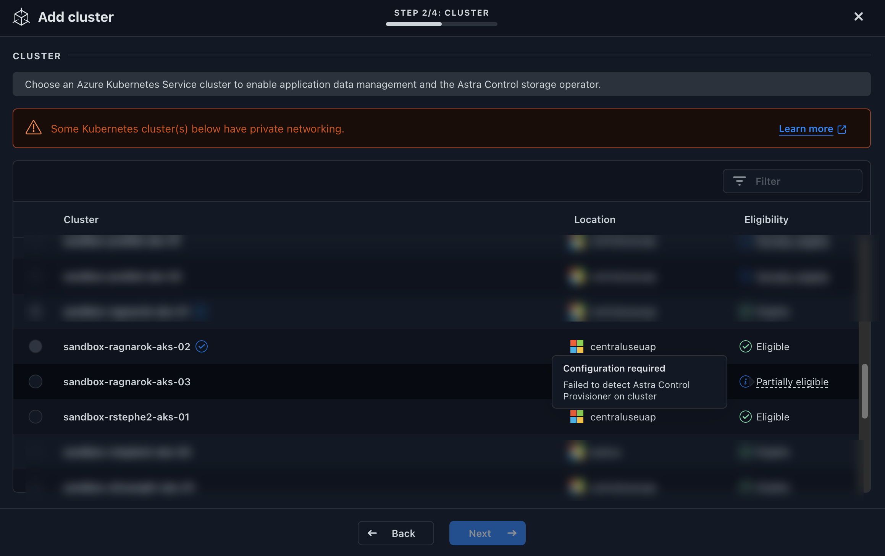

Notas de la versión
Notas de la versión
Habilita el aprovisionador de Astra Control
 Sugerir cambios
Sugerir cambios
Las versiones 23,10 y posteriores de Astra Trident incluyen la opción de usar Astra Control Provisioning, que permite a los usuarios de Astra Control con licencia acceder a funcionalidades avanzadas de aprovisionamiento del almacenamiento. El aprovisionador Astra Control ofrece esta funcionalidad ampliada, además de la funcionalidad estándar basada en CSI de Astra Trident. Puedes usar este procedimiento para habilitar e instalar el aprovisionador de Astra Control.
Tu suscripción al servicio de Astra Control incluye automáticamente la licencia para el uso del aprovisionador de Astra Control.
En las próximas actualizaciones de Astra Control, el aprovisionador de Astra Control reemplazará a Astra Trident como aprovisionador de almacenamiento y orquestador y será obligatorio para su uso en Astra Control. Por este motivo, se recomienda encarecidamente que los usuarios de Astra Control habiliten el aprovisionador de Astra Control. Astra Trident seguirá siendo de código abierto y se seguirá lanzando, manteniendo, admitiendo y actualizando con las nuevas funciones CSI y otras de NetApp.
Si agrega un clúster a Astra Control Service que no tenga Astra Trident instalado previamente, el clúster se marcará como Eligible. Usted primero "Añada el clúster a Astra Control", Astra Control Provisioner se activará automáticamente.
Si el clúster no está marcado Eligible, se marcará Partially eligible debido a una de las siguientes razones:
-
Está usando una versión anterior de Astra Trident
-
Se utiliza un Astra Trident 23,10 que aún no tiene habilitada la opción de aprovisionador
-
Se trata de un tipo de clúster que no permite la habilitación automática
Para Partially eligible Casos, usa estas instrucciones para habilitar manualmente el aprovisionador de Astra Control en tu clúster.

Si ya tienes un Astra Trident sin el aprovisionador de Astra Control y quieres habilitar el aprovisionador de Astra Control, haz lo siguiente primero:
-
Si tienes Astra Trident instalado, confirma que su versión está dentro de una ventana de cuatro versiones: Puedes realizar una actualización directa a Astra Trident 24,02 con el aprovisionador de control de Astra si tu Astra Trident está dentro de una ventana de cuatro versiones de la versión 24,02. Por ejemplo, puedes actualizar directamente de Astra Trident 23,04 a 24,02.
-
Confirme que su clúster tiene una arquitectura de sistema AMD64: La imagen del aprovisionador de Astra Control se proporciona en las arquitecturas de CPU AMD64 y ARM64, pero solo AMD64 es compatible con Astra Control.
-
Acceda al registro de imágenes de Astra Control de NetApp:
-
Inicia sesión en la interfaz de usuario de Astra Control Service y registra tu ID de cuenta de Astra Control.
-
Seleccione el icono de figura en la parte superior derecha de la página.
-
Seleccione acceso API.
-
Escriba su ID de cuenta.
-
-
En la misma página, selecciona Generar token de API y copia la cadena de token de API en el portapapeles y guárdalo en tu editor.
-
Inicia sesión en el registro de Astra Control usando el método que prefieras:
docker login cr.astra.netapp.io -u <account-id> -p <api-token>crane auth login cr.astra.netapp.io -u <account-id> -p <api-token>
-
-
(Solo registros personalizados) Siga estos pasos para mover la imagen a su registro personalizado. Si no está utilizando un registro, siga los pasos del operador Trident en la siguiente sección.

Puede usar Podman en lugar de Docker para los siguientes comandos. Si se utiliza un entorno de Windows, se recomienda PowerShell. Docker-
Extrae la imagen del aprovisionador de Astra Control del registro:
La imagen extraída no soportará múltiples plataformas y solo soportará la misma plataforma que el host que sacó la imagen, como Linux AMD64. docker pull cr.astra.netapp.io/astra/trident-acp:24.02.0 --platform <cluster platform>Ejemplo:
docker pull cr.astra.netapp.io/astra/trident-acp:24.02.0 --platform linux/amd64
-
Etiquete la imagen:
docker tag cr.astra.netapp.io/astra/trident-acp:24.02.0 <my_custom_registry>/trident-acp:24.02.0 -
Introduzca la imagen en el registro personalizado:
docker push <my_custom_registry>/trident-acp:24.02.0
Grúa-
Copie el manifiesto de Astra Control Provisioner en su registro personalizado:
crane copy cr.astra.netapp.io/astra/trident-acp:24.02.0 <my_custom_registry>/trident-acp:24.02.0
-
-
Determinar si el método de instalación original de Astra Trident utilizó un.
-
Habilita el aprovisionamiento de Astra Control en Astra Trident con el método de instalación que solías originalmente:
Operador Astra Trident-
Complete estos pasos si todavía no ha instalado Astra Trident o si ha quitado el operador de la implementación original de Astra Trident:
-
Cree el CRD:
kubectl create -f deploy/crds/trident.netapp.io_tridentorchestrators_crd_post1.16.yaml -
Cree el espacio de nombres trident (
kubectl create namespace trident) o confirme que el espacio de nombres trident sigue existiendo (kubectl get all -n trident). Si el espacio de nombres se ha eliminado, vuelva a crearlo.
-
-
Actualice Astra Trident a 24.02.0:
Para los clústeres que ejecutan Kubernetes 1,24 o una versión anterior, utilice bundle_pre_1_25.yaml. Para los clústeres que ejecutan Kubernetes 1,25 o posterior, utilicebundle_post_1_25.yaml.kubectl -n trident apply -f trident-installer/deploy/<bundle-name.yaml> -
Compruebe que Astra Trident está ejecutando:
kubectl get torc -n tridentRespuesta:
NAME AGE trident 21m
-
Si tienes un registro que usa secretos, crea un secreto para extraer la imagen del aprovisionador de Astra Control:
kubectl create secret docker-registry <secret_name> -n trident --docker-server=<my_custom_registry> --docker-username=<username> --docker-password=<token> -
Edite el CR de TridentOrchestrator y realice las siguientes modificaciones:
kubectl edit torc trident -n trident-
Establezca una ubicación de registro personalizada para la imagen de Astra Trident o extráigala del registro de Astra Control (
tridentImage: <my_custom_registry>/trident:24.02.0o.tridentImage: netapp/trident:24.02.0). -
Habilita el aprovisionador de Astra Control (
enableACP: true). -
Establezca la ubicación de registro personalizada para la imagen del aprovisionador de Astra Control o sáquela del registro de Astra Control (
acpImage: <my_custom_registry>/trident-acp:24.02.0o.acpImage: cr.astra.netapp.io/astra/trident-acp:24.02.0). -
Si estableció la imagen descubre los secretos anteriormente en este procedimiento, puede establecerlos aquí (
imagePullSecrets: - <secret_name>). Utilice el mismo nombre secreto que estableció en los pasos anteriores.
apiVersion: trident.netapp.io/v1 kind: TridentOrchestrator metadata: name: trident spec: debug: true namespace: trident tridentImage: <registry>/trident:24.02.0 enableACP: true acpImage: <registry>/trident-acp:24.02.0 imagePullSecrets: - <secret_name>
-
-
Guarde y salga del archivo. El proceso de despliegue comenzará automáticamente.
-
Compruebe que se han creado el operador, el despliegue y los replicasets.
kubectl get all -n trident
Solo debe haber una instancia del operador en un clúster de Kubernetes. No cree varias implementaciones del operador Trident de Astra. -
Compruebe el
trident-acpcontainer se está ejecutando y esoacpVersiones24.02.0con el estado deInstalled:kubectl get torc -o yamlRespuesta:
status: acpVersion: 24.02.0 currentInstallationParams: ... acpImage: <registry>/trident-acp:24.02.0 enableACP: "true" ... ... status: Installed
tridentctl-
"Si ya tiene un Astra Trident existente, desinstálelo del clúster que lo aloja".
-
Instale Astra Trident con el aprovisionador de control de Astra habilitado (
--enable-acp=true):./tridentctl -n trident install --enable-acp=true --acp-image=mycustomregistry/trident-acp:24.02 -
Confirme que se ha habilitado el aprovisionador de Astra Control:
./tridentctl -n trident versionRespuesta:
+----------------+----------------+-------------+ | SERVER VERSION | CLIENT VERSION | ACP VERSION | +----------------+----------------+-------------+ | 24.02.0 | 24.02.0 | 24.02.0. | +----------------+----------------+-------------+
Timón-
Si tiene Astra Trident 23.07.1 o anterior instalado, "desinstalar" el operador y otros componentes.
-
Si tu clúster de Kubernetes ejecuta la versión 1,24 o anterior, elimina psp:
kubectl delete psp tridentoperatorpod
-
Añada el repositorio de Astra Trident Helm:
helm repo add netapp-trident https://netapp.github.io/trident-helm-chart
-
Actualice el gráfico Helm:
helm repo update netapp-trident
Respuesta:
Hang tight while we grab the latest from your chart repositories... ...Successfully got an update from the "netapp-trident" chart repository Update Complete. ⎈Happy Helming!⎈
-
Enumere las imágenes:
./tridentctl images -n trident
Respuesta:
| v1.28.0 | netapp/trident:24.02.0| | | docker.io/netapp/trident-autosupport:24.02| | | registry.k8s.io/sig-storage/csi-provisioner:v4.0.0| | | registry.k8s.io/sig-storage/csi-attacher:v4.5.0| | | registry.k8s.io/sig-storage/csi-resizer:v1.9.3| | | registry.k8s.io/sig-storage/csi-snapshotter:v6.3.3| | | registry.k8s.io/sig-storage/csi-node-driver-registrar:v2.10.0 | | | netapp/trident-operator:24.02.0 (optional)
-
Asegúrese de que el trident-operator 24.02.0 esté disponible:
helm search repo netapp-trident/trident-operator --versions
Respuesta:
NAME CHART VERSION APP VERSION DESCRIPTION netapp-trident/trident-operator 100.2402.0 24.02.0 A
-
Uso
helm instally ejecute una de las siguientes opciones que incluyen estos ajustes:-
Un nombre para la ubicación de despliegue
-
La versión de Trident de Astra
-
El nombre de la imagen del aprovisionador de Astra Control
-
La marca para habilitar el aprovisionador
-
(Opcional) Una ruta de registro local. Si está utilizando un registro local, su "Imágenes de Trident" Se pueden ubicar en un registro o en diferentes registros, pero todas las imágenes CSI deben estar ubicadas en el mismo registro.
-
El espacio de nombres de Trident
-
Opciones-
Imágenes sin registro
helm install trident netapp-trident/trident-operator --version 100.2402.0 --set acpImage=cr.astra.netapp.io/astra/trident-acp:24.02.0 --set enableACP=true --set operatorImage=netapp/trident-operator:24.02.0 --set tridentAutosupportImage=docker.io/netapp/trident-autosupport:24.02 --set tridentImage=netapp/trident:24.02.0 --namespace trident
-
Imágenes en uno o más registros
helm install trident netapp-trident/trident-operator --version 100.2402.0 --set acpImage=<your-registry>:<acp image> --set enableACP=true --set imageRegistry=<your-registry>/sig-storage --set operatorImage=netapp/trident-operator:24.02.0 --set tridentAutosupportImage=docker.io/netapp/trident-autosupport:24.02 --set tridentImage=netapp/trident:24.02.0 --namespace trident
Puede utilizar
helm listpara revisar detalles de la instalación como nombre, espacio de nombres, gráfico, estado, versión de la aplicación, y el número de revisión.Si tiene problemas para poner en marcha Trident mediante Helm, ejecute este comando para desinstalar completamente Astra Trident:
./tridentctl uninstall -n trident
No "Elimina por completo los CRD de Astra Trident" Como parte de la desinstalación antes de intentar habilitar de nuevo Astra Control Provisioner.
Está habilitada la funcionalidad de aprovisionamiento de Astra Control y es posible usar cualquier función disponible para la versión que esté ejecutando.
Después de instalar el aprovisionador de Astra Control, el clúster que aloja el aprovisionador en la interfaz de usuario de Astra Control mostrará una ACP version en lugar de Trident version campo y núm. de versión instalada actual.